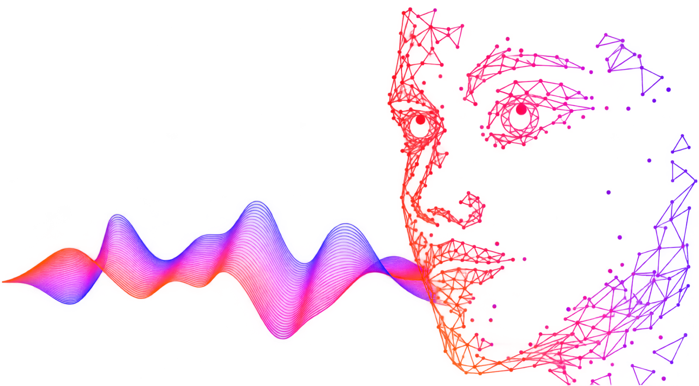
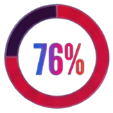
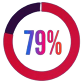

El 74% está de acuerdo en que la IA no debería usarse para clonar o suplantar la identidad de artistas sin autorización

El 76% opina que la música o la voz de un artista no deberían ser utilizadas ni procesadas por la IA sin permiso

El 79% considera que la creatividad humana sigue siendo esencial para la creación musical